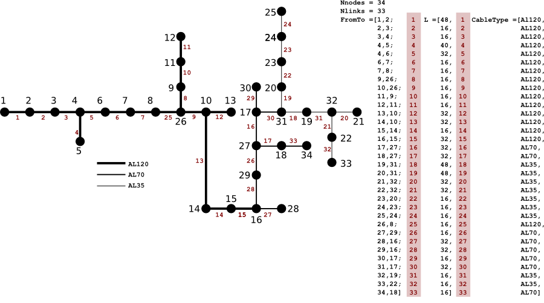
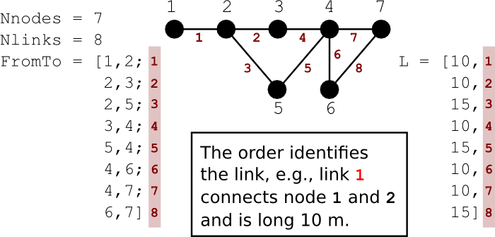
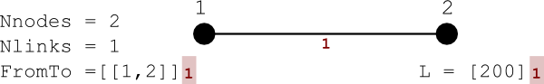

Package that contains different types of grids
This package contains different types of grids that can be used to represent electrical networks. The topology of the network is specified by
Extends from Modelica.Icons.MaterialPropertiesPackage (Icon for package containing property classes).
| Name | Description |
|---|---|
| Grid model inspired to the IEEE 34 Node test feeder | |
| Partial model that represents a generalized grid | |
| Simple model of a grid with 2 nodes and 1 link | |
| Simple model of a grid with 2 nodes and 1 link for medium voltage |
 Buildings.Electrical.Transmission.Grids.IEEE_34_AL120
Buildings.Electrical.Transmission.Grids.IEEE_34_AL120Grid model inspired to the IEEE 34 Node test feeder
This model represents a grid inspired by the IEEE 34 node test feeder. In this example, the cable types and lengths have been modified in order to represent a typical distribution feeder.
The following three type of cables are in the grid: AL120, AL70, and Al35.

Extends from Buildings.Electrical.Transmission.Grids.PartialGrid (Partial model that represents a generalized grid).
| Type | Name | Default | Description |
|---|---|---|---|
| Integer | nNodes | 34 | Number of nodes of the grid |
| Integer | nLinks | 33 | Number of links connecting the nodes |
| Integer | fromTo[nLinks, 2] | [[1, 2]; [2, 3]; [3, 4]; [4,... | Indexes [i,1]->[i,2] of the nodes connected by link i |
| Length | l[nLinks, 1] | [48; 16; 16; 40; 32; 16; 16;... | Length of the cable [m] |
Buildings.Electrical.Transmission.Grids.PartialGridPartial model that represents a generalized grid
This abstract grid model specifies the topology of the network by
The picture below describes the meaning of the values contained in the matrices.

Extends from Modelica.Icons.MaterialProperty (Icon for property classes).
| Type | Name | Default | Description |
|---|---|---|---|
| Integer | nNodes | Number of nodes of the grid | |
| Integer | nLinks | Number of links connecting the nodes | |
| Integer | fromTo[nLinks, 2] | Indexes [i,1]->[i,2] of the nodes connected by link i | |
| Length | l[nLinks, 1] | Length of the cable [m] | |
| BaseCable | cables[nLinks] | redeclare Buildings.Electric... | Array that contains the characteristics of each cable |
Buildings.Electrical.Transmission.Grids.TestGrid2NodesSimple model of a grid with 2 nodes and 1 link
This model represents a simple grid with two nodes and a single link between them.
The picture below describes the grid topology.

Extends from Buildings.Electrical.Transmission.Grids.PartialGrid (Partial model that represents a generalized grid).
| Type | Name | Default | Description |
|---|---|---|---|
| Integer | nNodes | 2 | Number of nodes of the grid |
| Integer | nLinks | 1 | Number of links connecting the nodes |
| Integer | fromTo[nLinks, 2] | [[1, 2]] | Indexes [i,1]->[i,2] of the nodes connected by link i |
| Length | l[nLinks, 1] | [200] | Length of the cable [m] |
Buildings.Electrical.Transmission.Grids.TestGrid2NodesMediumSimple model of a grid with 2 nodes and 1 link for medium voltage
This model represents a simple grid with two nodes and a single link between them. This model differs from Buildings.Electrical.Transmission.Grids.TestGrid2Nodes because it defines a medium voltage cable instead of a low voltage cable.
The picture below describes the grid topology.
Extends from Buildings.Electrical.Transmission.Grids.PartialGrid (Partial model that represents a generalized grid).
| Type | Name | Default | Description |
|---|---|---|---|
| Integer | nNodes | 2 | Number of nodes of the grid |
| Integer | nLinks | 1 | Number of links connecting the nodes |
| Integer | fromTo[nLinks, 2] | [[1, 2]] | Indexes [i,1]->[i,2] of the nodes connected by link i |
| Length | l[nLinks, 1] | [200] | Length of the cable [m] |